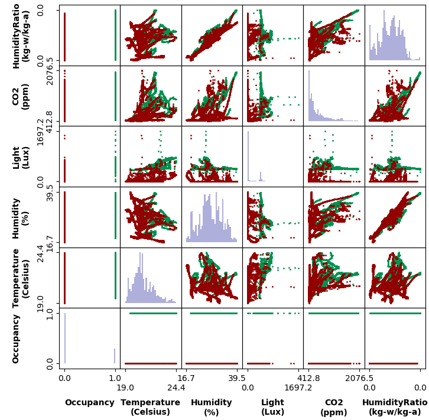
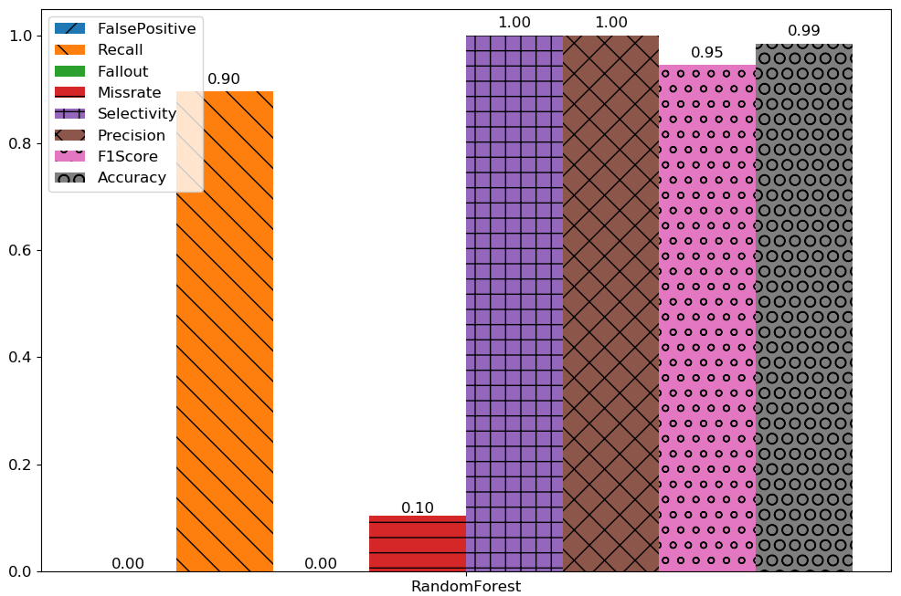

Sample Use Cases¶
In this section we provide multiple code snippets to show how ODToolkit can be used to carry out different experiments.
Plotting the correlation matrix¶
The correlation matrix is a graph that represents the correlation between different pairs of features when the room is unoccupied and when it is vacant. The graphs located on the main diagonal represents the probability distribution function of each feature in the data set.
Sample code¶
1 2 3 4 5 6 7 8 9 | import odtk
# Load a sample data set from the package, and remove its time feature
dataset = odtk.data.load_sample("umons-all")
name_for_time_column = dataset.feature_mapping[dataset.time_column_index]
dataset.remove_feature(name_for_time_column)
# Plot the correlation graph
odtk.plot.plot_feature_correlation(dataset)
|
Result¶
Evaluating a specific model on a given data set¶
Here we utilize a given data set to evaluate a specific model in terms of its ability to estimate the binary occupancy state of a room. We adopt a subset of the evaluation metrics to visualize the result.
Sample code¶
1 2 3 4 5 6 7 8 9 10 11 12 13 14 15 16 17 | import odtk
# Load a sample data set from the package
dataset = odtk.data.load_sample(["umons-all"])
# Use Random Forest model to perform occupancy estimation
# Use all binary evaluation metrics to evaluate the model
result = odtk.evaluation.Result()
result.set_result(odtk.easy_set_experiment(dataset,
models=["RandomForest"],
evaluation_metrics="all")[0])
# Plot the scores in a bar chart
odtk.plot.plot_result(result,
dataset="umons-all",
threshold="<= 1",
file_name="one_dataset_one_model_all_metrics")
|
Result¶
Evaluating multiple models on multiple data sets¶
We can also use several data sets to evaluate the performance of different models when estimating the binary occupancy state of a room. We choose the F1 Score to show the result.
Sample code¶
1 2 3 4 5 6 7 8 9 10 11 12 13 14 15 16 17 18 | import odtk
# Load two sample data sets from the package
dataset = odtk.data.load_sample(["umons-all", "sdu-all"])
# Use two models to perform occupancy estimation
# Use all binary evaluation metrics to evaluate the model
result = odtk.evaluation.Result()
result.set_result(odtk.easy_set_experiment(dataset,
models=["RandomForest", "NN"],
evaluation_metrics="all",
thread_num=1)[0])
# Plot the scores in a bar chart
odtk.plot.plot_result(result,
metric="F1Score",
threshold="<= 1",
file_name="one_dataset_one_model_all_metrics")
|